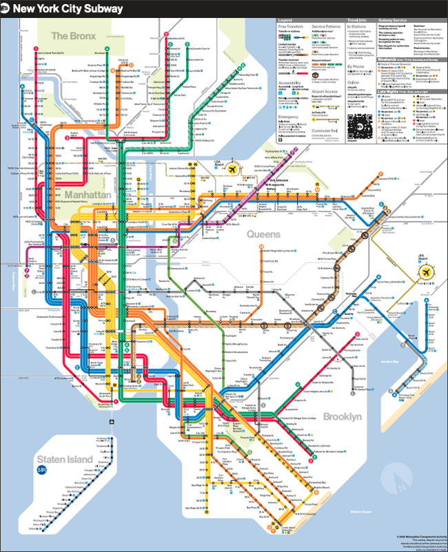
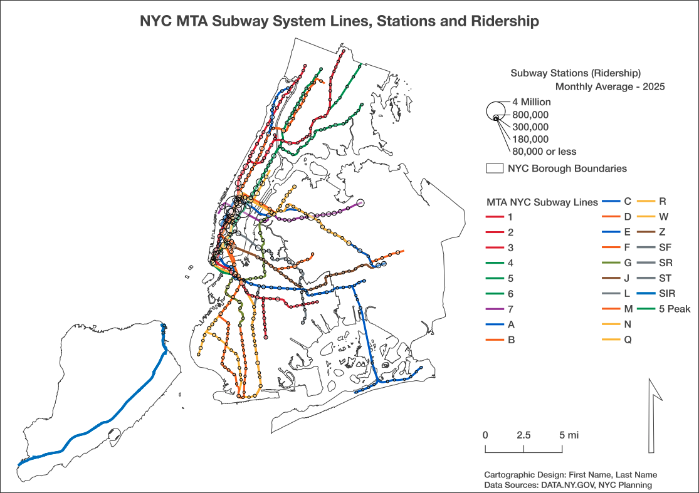

Class 4 Assignment: Categorical and Proportional Symbolization - NYC Transit Cartographic Design
Spring 2026 | UENV 3200 - CRN 11009 + UURB 3210 - CRN 111008

🎯 Assignment 4 - Overview & Goals
In this assignment, you will create a multivariate point map of NYC subway stations that combines:
- Categorical symbolization → Subway Line Line ID
- Proportional symbolization → Average Weekday Ridership
You will move from raw spatial data → aggregation → attribute join → multivariate symbology → final map layout export.
This assignment reinforces the conceptual distinction between:
- Type (qualitative difference)
- Intensity (quantitative magnitude)
✅ Learning Benchmarks
By the end of this assignment, you should be able to:
- Load and inspect spatial and tabular datasets in QGIS
- Aggregate a date subset based on average statistic (ridership per month, 2025)
- Identify and apply a correct join key between a point layer and a CSV table
- Apply categorical styling using a qualitative field (line ID)
- Apply proportional symbol scaling using a numeric field (ridership)
- Manage clutter/overplotting through symbol and layout design choices
- Produce a polished layout with clear legends for both variables
🎬 Class 4 Recorded Lecture:
Before proceeding with assignment steps below, review the posted lecture slides + lecture recording for an overview of this week’s concepts and themes.
📚 Class 4 Readings:
The two previous readings will be featured on Quiz #4 upcoming at the start of Week 5.
📂 Data Sources ( 4 Individual Downloads in Total)
1 🚆 Subway Stations (Service Point Locations with Ridership Data)
Source: DATA.NY.GOV
Dataset: Subway Stations with ridership per month, dated to 2017
Geometry: Point
Common fields: station name, division, line(s), borough, station/complex ID
Ridership data: date_month, ridership
Subway Stations (Points) – with Lat/Lon + Ridership Download
Export in the Shapefile format. The following backup link can be used if the official link above stalls.
2 🚆 Subway Lines (Service Line Geometries)
Source: DATA.NY.GOV
Dataset: MTA Subway Service Lines
Geometry: Lines
Common fields: station name, division, line(s), borough, station/complex ID
Export in the Shapefile format.
3 🎨 Subway Line QGIS Style File
- Source: generated QGIS Style File
- Dataset: QGIS Style Layer
- Geometry: Lines
- File suffix:
.qml
Download the hosted .qml file and place it in your assignment data directory next to the subway line features themselves.
4 🗺️ Borough Boundaries (Shoreline-Clipped / Water Areas Excluded)
Source: NYC Open Data (NYC Department of City Planning)
Dataset: Borough Boundaries (Water Areas Excluded)
Geometry: Polygons
Common fields: boroname, boro_code, shape_area, shape_leng
Borough Boundaries — Water Areas Excluded (gthc-hcne) Download
Export in the Shapefile format.
🗺 Workflow: Data → Final Map
🧾 Step 1 — Load Data into QGIS
Goal: Bring ridership, line dataset and borough boundaries into the same project and inspect their structure.
☑️ Checklist

🔎 Step 2 — Identify Pertinent Fields & Prepare Aggregation (2025 Monthly Average)
In this step, you will:
- Filter the dataset to 2025 months only
- Use Group Stats to compute the average monthly ridership per station complex
- Keep awareness of scientific notation in outputs
- Dissolve geometry to ensure a clean 1:1 join
- Export a properly formatted
.csvfor joining
🗓️ 2A — Filter to 2025 Records Only
The date_month field is already stored as a Date type in the format M/D/YY. Even though the year appears as two digits (e.g., 12/1/25), QGIS internally recognizes the full year (2025).
☑️ Apply Layer Filter
Right-click the ridership layer → Filter…
Use the following expression:
"date_month" >= '2025-01-01'
AND
"date_month" <= '2025-12-31'✔ Confirm that only 2025 records remain (5074 features should be included via applied filter)
✔ Each station_co should now appear 12 times (one for each month)
✔ Scroll through and verify that all months fall within 2025
🎯 Result: A clean subset containing only the 12 months of 2025 for each station complex.
📊 2B — Use Group Stats to Compute Average Monthly Ridership (2025)
We now compute the average monthly ridership per station complex using the filtered 2025 layer.
Open:
Plugins → Group Stats🟦 Rows (Group By)
Drag into Rows:
station_co🟨 Values (Aggregation)
Drag into Values:
ridershipSet statistic to (Drag into Columns):
AverageWhich equals:
🎯 Average Monthly Ridership per Station Complex (2025)
Point to assignment directory; export via Data > Save all to CSV file > ridership.csv
Next, utilize Data Source Manager > Delimited Text to import ridership.csv. Do note that parameters must be correct as follows:
- Custom delimiter = Semicolon
- Number of header lines to discard = 1
- First record has field names = checked
- Detect field types = checked
- No geometry (attribute only table) = checked
✔ Confirm that station_co = Integer (32 bit)
✔ Confirm that field_2 = Decimal (double)
✔Large ridership values may display in scientific notation (e.g., 3.4e+06) in Group Stats; however, the Decimal field type should force those values to decimal format without scientific notation.
💾 2C — Export Aggregated Table
Click:
Save As…Navigate to directory; export to:
avg_monthly_ridership_2025.csv✔ Confirm there is one row per station_co
✔ Confirm values are not displayed in scientific notation
🧩 2D — Dissolve Geometry for a 1:1 Join
The original stations ridership layer still contains 12 features per station complex.
To ensure a proper relational join, dissolve the geometry so that there is a simple one station point per actual station.
Open:
Processing Toolbox → Vector Geometry → DissolveConfigure:
- Input layer: filtered 2025 ridership layer
- Dissolve field:
station_co- Uncheck “Keep dissolved fields” unless needed
Run the tool.
✔ Confirm resulting layer now has one feature per station_co
✔ Geometry should remain intact
✔ Geometry should overlay previous layer version with 426 total overlap points
🔗 2E — Join Aggregated CSV to Dissolved Geometry
Right-click the dissolved layer → Properties → Joins
Configure:
- Join layer:
avg_monthly_ridership_2025 - Join field:
station_co - Target field:
station_co
Click OK.
✔ Confirm join is one-to-one
✔ Confirm no duplicated records
✔ Confirm no unexpected NULL values
✔ Confirm avg_monthly_ridership_2025 tracks with station_co across all 426 records
🎯 Outcome of Step 2
You now have:
- One geometry per station complex
- One numeric attribute representing Average Monthly Ridership (2025)
- Clean formatting without scientific notation
- A properly structured dataset ready for proportional symbolization
This completes the data preparation phase and prepares the layer for multivariate cartographic styling.
☑️ Export the Final Layer
Right-click the dissolved + joined layer → Export → Save Features As…
Configure:
- Format: Shapefile
- File name:
subway_stations_avg_monthly_2025.shp- CRS: Keep project CRS
- Check: Add saved file to map
Click OK.
🎨 Step 3 — Apply Categorical Symbolization (Service-Based Styling via QML)
Goal: Apply official MTA route colors using the pre-built QGIS style file that categorizes by the service attribute.
Rather than manually building categorized symbology, you will load the prepared .qml style layer.
📂 3A — Load the QML Style File
Right-click the subway lines layer → Properties → Symbology
In the lower-left corner, click:
Style → Load Style…Select the provided file:
MTA_Subway_Lines_service_field_from_lines_csv.qmlClick Load.
☑️ Checklist
🎯 Result of Step 3
You now have:
- Official MTA service colors applied
- Styling driven directly by the
serviceattribute - Clean, standardized symbology without manual classification
- A reproducible styling workflow for cartographic consistency
This completes the categorical symbolization phase and prepares the layer for proportional symbol scaling.
📏 Step 4 — Apply Proportional Symbol Sizing (Ridership)
Goal: Scale point size by average weekday ridership.
☑️ Checklist
✅ Benchmark
- Manhattan should show density while maintaining map legibility
- Outer borough stations remain visible
- Category color remains legible
🧭 Step 5 — Add Context & Confirm Visual Hierarchy
Goal: Ensure subway points remain the dominant visual layer.
☑️ Checklist
🖨 Step 6 — Build Print Layout
Goal: Create a complete, readable map composition.
☑️ Required Elements
✅ Legend Logic Requirement
Your map must clearly communicate:
- Color = Division
- Size = Average Weekday Ridership
🧩 Advanced Symbology — Data-Defined Size Legend
Because your proportional symbols are data-defined, you must explicitly construct a readable size legend.
Open:
Layer Properties → Symbology
📏 1️⃣ Confirm Data-Defined Size
- Ensure the marker size is controlled by a data-defined expression via Advanced > Data-defined Size Legend
🧭 2️⃣ Configure Legend Entries
Under Advanced → Data-defined Size Legend
- Enable: “Legend for data-defined size”
- Choose: Collapsed legend
- Use Manual size classes for maximum control
Example legend values:
- Small Stations | 80,000 or less
- Medium-Small Stations | 180,000
- Medium stations | 300,000
- Large Stations | 800,000
- Largest Stations | 4,000,000
📤 Step 7 — Export Deliverables
☑️ Checklist
📁 File Naming
LastName_Assignment4_SubwayMap.pdf✍️ Reflection (150–250 Words)
Address:
- Where does ridership density occur?
- Does Manhattan visually dominate? Why?
- How well can a viewer interpret both variables simultaneously?
- What design approach have you used to improve clarity?
📦 Deliverables at Canvas
- Final Map Export (.pdf or .png)
- Reflection Submission (.txt)
📌 Map Example

🧮 Grading Rubric
| Criteria | Description | Weight |
|---|---|---|
| Data Preparation & Join Accuracy | Correct loading, join key identified, ridership field valid | 20% |
| Categorical Symbolization | Clear, meaningful division-based color system | 20% |
| Proportional Symbol Scaling | Appropriate size range, minimal distortion, readable pattern | 25% |
| Map Layout & Design | Professional layout, clear two-variable legend logic, hierarchy | 25% |
| Reflection & Critical Insight | Demonstrates conceptual understanding of multivariate mapping | 10% |
| Total | 100% |
🧠 Conceptual Takeaway
This assignment demonstrates multivariate cartography:
- Color communicates difference in kind
- Size communicates difference in magnitude
- Effective maps require careful management of hierarchy, clutter, and legend clarity.
Video Guides
- Video 1 - Understanding Map Scale:

- Video 2 - QGIS Scale Bar Development: